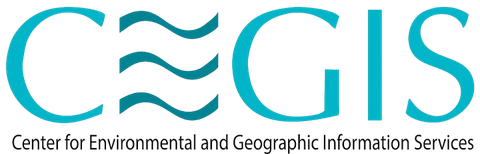

Research
Current work
Applied research sitting between hydrodynamic modelling and the communities that early-warning systems are built to serve.
May 2026 – Present

Intern, Water Resource Management DivisionCenter for Environmental and Geographic Information Services (CEGIS), Dhaka
- Support applied water-resource management work connected to climate adaptation, coastal risk, and disaster risk reduction in Bangladesh.
- Undertake supervised training in climate, river, and hydrodynamic modelling relevant to tidal surge, coastal flooding, and water-sector decision support.
- Support team-based work on an AI-based tidal-surge early-warning system for Bangladesh, with emphasis on modelling workflows, data interpretation, and climate-resilient planning.
Ongoing
Trainee, CLARE — Climate Resilient Adaptation and Early Action initiative
Spatial Surge Forecasting Using Artificial Intelligence and Community Knowledge for Inclusive and Transformative Early Actions
- Support the integration of community and indigenous knowledge into AI-assisted spatial surge forecasting and early-action planning.
- Contribute to strategies that strengthen community resilience to climate-related threats in vulnerable regions.
- Project lead: Dr. Md. Jakariya, North South University.
Research interests
Threads running through the work
Climate adaptation & disaster risk reduction
Water resource management
Hydrodynamic & river modelling
AI-enabled tidal-surge early warning
Coastal water security & rainwater harvesting
Climate-induced vulnerability & ultra-poverty
Community knowledge & early action
Environmental governance
Plastic & microplastic pollution
Environmental health & sustainable development